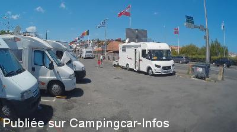
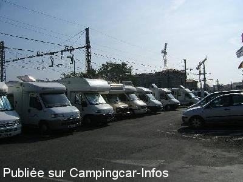
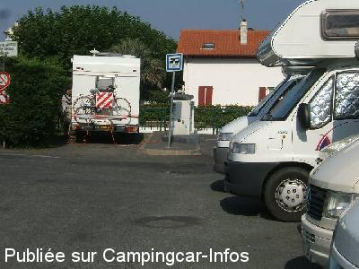

ASN = Aire de services avec stationnement nuit possible de :
SAINT JEAN DE LUZ
(N° 852)
Accès/adresse :
Pont Charles de Gaulle
64500 SAINT JEAN DE LUZ
64500 SAINT JEAN DE LUZ
Latitude : (Nord) 43.38536° Décimaux ou 43° 23′ 7′′
Longitude : (Ouest) -1.66278° Décimaux ou -1° 39′ 46′′
Tarif : 2015
Stationnement : 4 à 6 €
Services, eau : 2 €
Électricité 1 h : 2 €
Type de borne : EURO-RELAIS
Services :


Tous commerces à 200 m
Autres informations :
Aire aménagée, goudronnée, éclairée
Très bruyante

Le 22/07/2014 par a&b

Le 08/11/2006 par jean.le-borgne

Le 08/11/2006 par jean.le-borgne
de
crek
le 14/04/2016 :
quand c était gratuit le parking était plein
quand c était gratuit le parking était plein
de
Roué Jacques
le 26/03/2016 :
de jackes29 le 25-03-2016
de passage le jeudi 17-03-2016,je confirme:c'est indécent et honteux de nous parquer dans un endroit aussi bruyant et sale ,mais pour le fric!!! on peut faire tout et n'importe quoi.Aire à déconseiller.
de jackes29 le 25-03-2016
de passage le jeudi 17-03-2016,je confirme:c'est indécent et honteux de nous parquer dans un endroit aussi bruyant et sale ,mais pour le fric!!! on peut faire tout et n'importe quoi.Aire à déconseiller.
de
Mimi14
le 13/10/2015 :
A déconseiller : cher et vraiment pas le top:-((( La pire aire jamais vue : nous n'avons fait que passer sans nous arrêter...
A déconseiller : cher et vraiment pas le top:-((( La pire aire jamais vue : nous n'avons fait que passer sans nous arrêter...
de
d. Mainçon
le 22/09/2015 :
Bonjour
De passage le vendredi 10 09 2015.Incroyable, nous pensons que la commune fait son maximum pour ne pas recevoir les campings car. De qui se moque-ton !
Pour compléter ce florilège des RATS se sont montrés en fin d'après midi, le long de la clôture de la voie ferrée, ATTENTION a vos enfants et toutes personnes, bref la ZONE en pleinne ville par manque d'entretient de la mairie et de ses service. Quelle gestion déplorable
Bonjour
De passage le vendredi 10 09 2015.Incroyable, nous pensons que la commune fait son maximum pour ne pas recevoir les campings car. De qui se moque-ton !
Pour compléter ce florilège des RATS se sont montrés en fin d'après midi, le long de la clôture de la voie ferrée, ATTENTION a vos enfants et toutes personnes, bref la ZONE en pleinne ville par manque d'entretient de la mairie et de ses service. Quelle gestion déplorable
de
rochetaing
le 30/08/2015 :
Bonjour
de passage le 29 08 2015.Incroyable mais vrai.Tout à fait d'accord avec le commentaire précédent.En plus c'est payant(6e).A éviter. Nous nous sommes replié sur l'aire de HENDAY.
Bonjour
de passage le 29 08 2015.Incroyable mais vrai.Tout à fait d'accord avec le commentaire précédent.En plus c'est payant(6e).A éviter. Nous nous sommes replié sur l'aire de HENDAY.
de
ixeo23
le 06/07/2015 :
De passage le 24 juin 2015; aire bondée; derrière le chemin de fer, devant une route à grande circulation, camping car touche-touche; je pense que la commune fait son maximum pour ne pas recevoir les camping car. Nous nous sommes replié sur le camping ''LARROULETA'' à URUGNE
De passage le 24 juin 2015; aire bondée; derrière le chemin de fer, devant une route à grande circulation, camping car touche-touche; je pense que la commune fait son maximum pour ne pas recevoir les camping car. Nous nous sommes replié sur le camping ''LARROULETA'' à URUGNE
de
M&R
le 05/07/2015 :
7 MAI 2015 : de qui se moque-ton !
Il faut le voir pour le croire !
Sommes nous ( camping-caristes ) si mal aimés que cela !
ADIEU SAINT JEAN DE LUZ.
7 MAI 2015 : de qui se moque-ton !
Il faut le voir pour le croire !
Sommes nous ( camping-caristes ) si mal aimés que cela !
ADIEU SAINT JEAN DE LUZ.
de
patmau33
le 10/06/2015 :
De passage le 8 mars 2015 : attention le parking est payant depuis début mars 2015 sans aucun aménagement, tarifs pour 24 heures du 01/04 au 30/10 : 6 €, du 01/11 au 31/03 : 4€, eau 2€ et électricité 2€ les 2 heures. Ce parking est entre les voies de chemins de fer et la route, cependant hors saison et week-end assez calme durant la nuit
De passage le 8 mars 2015 : attention le parking est payant depuis début mars 2015 sans aucun aménagement, tarifs pour 24 heures du 01/04 au 30/10 : 6 €, du 01/11 au 31/03 : 4€, eau 2€ et électricité 2€ les 2 heures. Ce parking est entre les voies de chemins de fer et la route, cependant hors saison et week-end assez calme durant la nuit
de
Marcel
le 05/10/2014 :
Impensable de songer à passer la nuit à un tel endroit aussi bruyant (voir les autres commentaires ci-dessous). Mais au moins souhaiterait-on y stationner pendant la journée… de passage le 27.09.2014 vers 12h00, l'aire était totalement saturée. Le nombre de places est bien trop insuffisant pour une localité aussi importante et très visitée, d'autant plus que tous les parkings proches du centre sont interdits aux camping-cars, même ceux qui pourtant présentent les caractéristiques et dimensions suffisantes. Avons tourné pendant une heure avant de trouver une place dans un faubourg à près de 3 km du centre.
Campingcaristes, évitez St-Jean de Luz car, manifestement, on ne nous y aime pas !!!
Impensable de songer à passer la nuit à un tel endroit aussi bruyant (voir les autres commentaires ci-dessous). Mais au moins souhaiterait-on y stationner pendant la journée… de passage le 27.09.2014 vers 12h00, l'aire était totalement saturée. Le nombre de places est bien trop insuffisant pour une localité aussi importante et très visitée, d'autant plus que tous les parkings proches du centre sont interdits aux camping-cars, même ceux qui pourtant présentent les caractéristiques et dimensions suffisantes. Avons tourné pendant une heure avant de trouver une place dans un faubourg à près de 3 km du centre.
Campingcaristes, évitez St-Jean de Luz car, manifestement, on ne nous y aime pas !!!
de
LE VIKING
le 31/08/2014 :
Bonjour,
Un grand merçi a Saint JEAN de LUZ pour son acceuil envers les c cars certe un peu bruyante mais elle existe et est pres du centre ville et de la plage
Bonjour,
Un grand merçi a Saint JEAN de LUZ pour son acceuil envers les c cars certe un peu bruyante mais elle existe et est pres du centre ville et de la plage
de
gleonec
le 20/02/2014 :
cette aire a au moins le mèrite d'exister,au pays basque c'est rare de trouver de quoi se garer pratiquement en ville.Merci pour nous
cette aire a au moins le mèrite d'exister,au pays basque c'est rare de trouver de quoi se garer pratiquement en ville.Merci pour nous
de
Micheve-44
le 03/10/2013 :
Aire pas super en effet, mais très bien pour se poser le temps d'une balade dans la ville qui est très sympa.
Sept 2013.
Aire pas super en effet, mais très bien pour se poser le temps d'une balade dans la ville qui est très sympa.
Sept 2013.